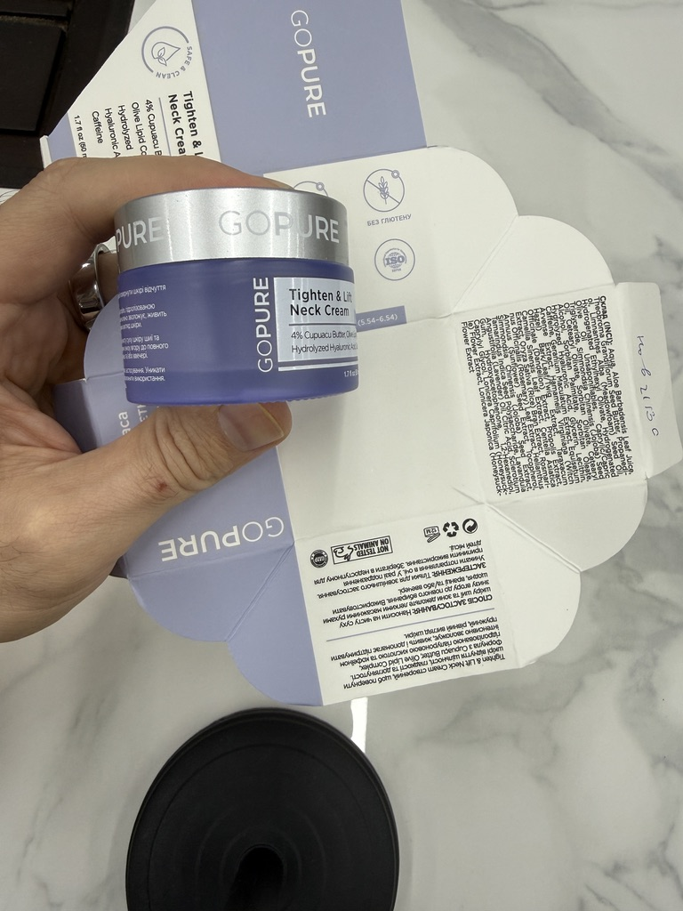
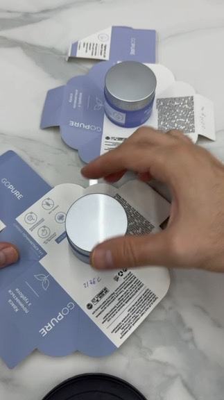
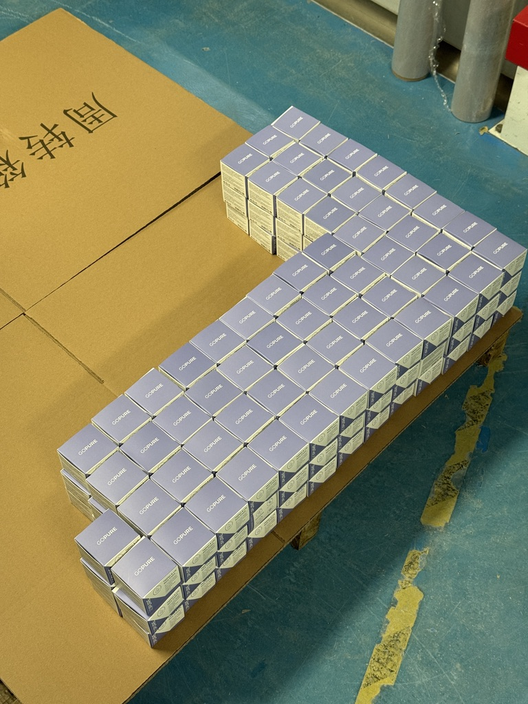
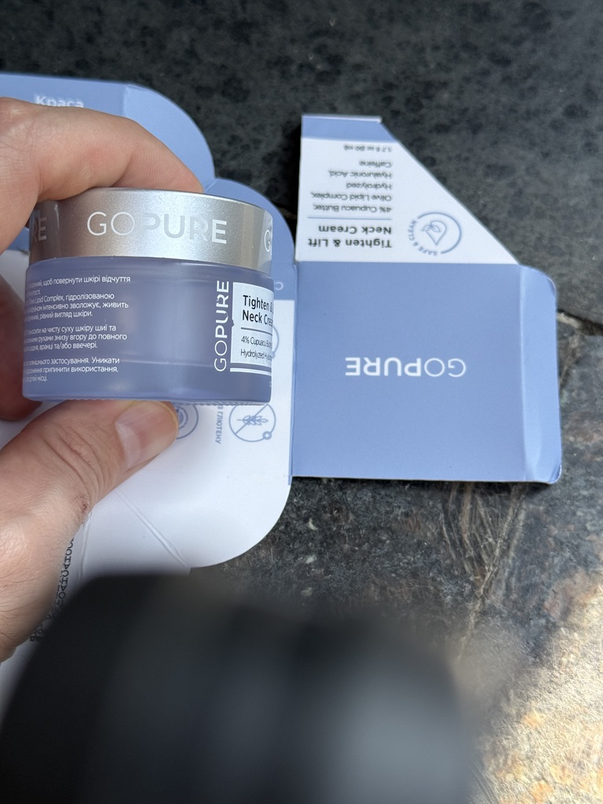

stage: 0
attempt: 1
status: building_pipeline
budget_cap_usd: 30
spent_usd: 0.00
last_update: 2026-09-03T15:40:00Z
artifacts: {}
| ts | provider | op | model | units | usd | label |
|---|




# DIGEST.md — 2026-09-03 15:40 UTC ## Сейчас: Шаг 0 — строю конвейер - Среда: ffmpeg/tesseract(ukr,eng)/faster-whisper(pip) поставлены; веса whisper локально НЕ скачиваются (HF/azure закрыты), whisper работает в sandbox Higgsfield. - Входы: `targ.mp4` — НЕТ (см. QUESTIONS §1). `gopure_docs/` — НЕТ, основания найдены в Google Drive. Сайт — из репо gopure-pages + Drive-копия статьи. - Провайдер: Higgsfield MCP (8815 кред.), kie/ElevenLabs недоступны. Подробности — DECISIONS D-01…D-11. - Потрачено: $0.00 из $30.
# DECISIONS.md — развилки, дефолты, что изменить если не согласен | # | Дата | Решение | Почему | Что изменить, если не согласен | |---|---|---|---|---| | D-01 | 2026-09-03 | Донор `targ.mp4` физически недоступен → Stage 1 строится на АРХИВНЫХ замерах того же файла (passport-targ.json, dna-passport.md из claude-skills-backup/_archive/taras-vsl-adapt, замер 19.08.2026: 194.49 с, 720×1280, 41 шот, 89 титров, 460 слов/142 wpm, 103.4 BPM, карта 13 битов по %). Судья judge-decode пере-измерить не может → Stage 1 = **red carried**. | Правило remove-human: без донора конвейер должен дойти до deliver/. Архив — единственные измеренные цифры этого файла. | Положить `targ.mp4` в корень репо (или ссылку на Drive-файл) и создать FEEDBACK.md с строкой «rerun stage1» — gates/stage1.py пере-измерит автоматически. | | D-02 | 2026-09-03 | Папки `gopure_docs/` нет → 4 основания взяты из Google Drive: Avatar = «Карта ЦА крема для шеи GoPure»; Market Research = «Исследование рынка крема для шеи GoPure» + «Аналіз ринку…» + «Аналіз конкурентів…»; Beliefs = набор убеждений из Avatar §«Драйверы/барьеры» + «Gemini ЦА»; Offer Brief = «BRAND STYLEBOOK — GoPure» + «GOPURE — система подтяжки….docx». Отдельных файлов «Beliefs» и «Offer Brief» для goPure в Drive нет. | Единственные документы-основания по продукту в доступе. | Положить 4 файла в `gopure_docs/` — gates/stage2.py перечитает их первыми. | | D-03 | 2026-09-03 | Провайдер: kie.ai и ElevenLabs недоступны (ключей нет в env, хосты api.kie.ai / api.elevenlabs.io закрыты egress). Рабочий провайдер — **Higgsfield MCP** (баланс 8815 кред., ultra): `seedance_2_0_mini` 480p 9:16 (=seedance-2-mini, R1 соблюдён), `nano_banana_pro` для стиллов, `text2speech_v2` variant=elevenlabs для VO, `sandbox_exec` (ffmpeg, faster-whisper) для замеров/сборки. | R1 говорит «правило для любого провайдера» — модель та же. | Задать $KIE_API_KEY / $ELEVENLABS_API_KEY в окружении и открыть хосты — tools/kie_client.py и tools/eleven_client.py готовы. | | D-04 | 2026-09-03 | Курс кредитов Higgsfield → USD принят **$0.01/кредит** (ultra-план; точной публичной цены за кредит у API нет). Клип 5 с 480p = 5 кр = $0.05; стилл nano_banana_pro = 2 кр = $0.02. | Консервативная оценка; при cap $30 = 3000 кред. | Указать реальный курс в FEEDBACK.md; COSTS.csv пересчитается (`tools/cost_logger.py --rate`). | | D-05 | 2026-09-03 | Аудио-маршрут: донор СПЕТ (мультяшный song-VSL) → по правилу Stage 1 нужен Suno-first, но Suno есть только через kie.ai (закрыт). Дефолт: **сплошной женский украинский VO** (ElevenLabs через Higgsfield) + без музыкального бэда (у Higgsfield нет доступной модели музыки вне game-pipeline). Помечено красным в DIGEST как отклонение от R7/ДНК. | Иначе аудио невозможно вообще. | Дать kie.ai ключ → `tools/kie_client.py suno` сгенерирует песню голос+музыка одним куском по SCRIPT_uk как lyrics. | | D-06 | 2026-09-03 | Цены: в источниках расхождение. gopure-pages/landing.html (26.05.2026): 1 490 / 2 990 / 4 990 ₴; Stylebook (09.07.2026), Карта ЦА (01.07), Аналіз ринку (01.07), VSL-сценарий (12.08): 895 / 1 570 / 2 055 ₴, якорь 1 750 ₴/банка. Берём **895 / 1570 / 2055, старая цена 1750/банка** (5 более поздних источников против 1). | Позднее и чаще. | Написать актуальные цены в FEEDBACK.md — T5 пересчитается. | | D-07 | 2026-09-03 | Гарантия: 60 дней (landing, advertorial, статья gopure.space FAQ, VSL). В статье gopure.space есть и «14-денна гарантія» (CTA-блок) — противоречие в самом источнике; берём 60. | 4 источника vs 1 строка. | FEEDBACK.md. | | D-08 | 2026-09-03 | Клинические claims (91%/96%/93%/86%, «124 жінки», «подвійне сліпе») — присутствуют на сайте (advertorial, статья), но Market Research §5 прямо говорит: «удалить заимствованные американские отзывы, фото врачей и фейковые заявления о клинических исследованиях»; Meta запрещает до/после. В сценарий берём только «опитування споживачів» с формулировкой «за відгуками» и без «клінічно доведено»; до/после в кадре не показываем (proof через реакцию близкого + текстуру, как у донора). | R4 + юридический риск, указанный в самих документах. | FEEDBACK.md: «разрешаю клинические claims». | | D-09 | 2026-09-03 | Локальная машина не может скачать результаты с CDN Higgsfield (egress). Файлы возвращаются base64-чанками через stdout sandbox (≤200 КБ на вызов) → `tools/hf_transfer.py`. Excerpt (~40 с) переносим целиком; полный ролик — переносим, если суммарно ≤ ~60 чанков, иначе кладём в deliver/ ссылку на Higgsfield media + чанковую копию по частям. | Единственный канал sandbox→local. | Открыть d2ol7oe51mr4n9.cloudfront.net / d8j0ntlcm91z4.cloudfront.net в egress-политике — `tools/hf_transfer.py fetch <url>` скачает напрямую. | | D-10 | 2026-09-03 | Судьи: субагенты Agent tool (чистый контекст), model=opus как в задании; в среде судья не видит промпты генерации — ему передаются только пути артефактов/паспорта/рубрики. Анализ картинок судья делает через Read (изображения) и Bash (ffprobe/OCR из tools/). | Требование п.7 протокола. | — | | D-11 | 2026-09-03 | Формат клона: донор 3:14 песенный мультфильм; клон делаем **в живом фотореалистичном стиле** (аватар = украинка 45–60 по Карте ЦА; стиль рендера «как у донора» = вертикаль 9:16, плашечные титры, та же кривая ритма), потому что паспорт продукта — реальная стеклянная банка с фото, а Market Research запрещает копировать американские материалы. Длительность клона = донор ±5% (194 с). | R3: у донора берём структуру/ритм, не мир. | FEEDBACK.md: «мультяшный 3D как у донора». |
# QUESTIONS.md — вопросы, на которые нужен ты (работа НЕ остановлена) 1. **Где `targ.mp4`?** Его нет ни в репо, ни в Drive (поиск по title), ни в других 8 репо. Положи файл в корень репо или дай ссылку на Drive — Stage 1 пере-измерится (`gates/stage1.py`), judge-decode станет зелёным. Сейчас Stage 1 = red carried на архивных замерах (D-01). 2. **Актуальные цены и старая цена** — 895/1570/2055 (якорь 1750) или 1490/2990/4990? (D-06) 3. **Разрешены ли клинические claims** «91% за 4 тижні / 124 жінки / подвійне сліпе»? Market Research рекомендует их убрать; в сценарий взяты только «за відгуками» (D-08). 4. **Ключи kie.ai / ElevenLabs** — если дать, аудио пойдёт по Suno-first (донор спет) и стиллы по nano-banana-2 на kie, как в задании (D-03, D-05). 5. **Стиль клона**: фотореализм (выбрано, D-11) или мультяшный 3D как у донора? 6. **Egress**: открыть cloudfront-хосты Higgsfield — тогда mp4 будут скачиваться напрямую, а не base64-чанками (D-09). 7. Телефон на лендинге `+38 (050) 123-45-67` выглядит как заглушка — в end card не ставим телефон, только «Оплата при отриманні · Нова Пошта». Подтверди.
# FEEDBACK_LOG.md | # | Дата | Пункт из FEEDBACK.md | Статус (done / not-done / rejected) | Где/почему | |---|---|---|---|---|